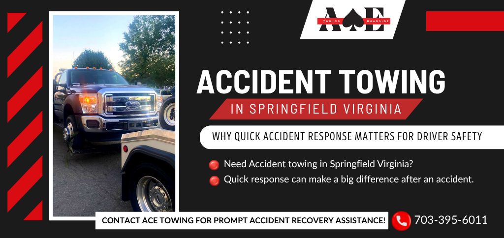

24/7 Accident Towing in Springfield, VA
Fast, professional, and dependable accident towing and collision recovery services throughout Springfield, Virginia.
Call Now: (703) 395-6011
Fast, professional, and dependable accident towing and collision recovery services throughout Springfield, Virginia.
Call Now: (703) 395-6011ACE Towing provides fast and dependable accident towing services in Springfield, VA for drivers involved in collisions and roadside emergencies. Our experienced tow truck operators are available 24 hours a day, 7 days a week to assist motorists throughout Springfield and Northern Virginia.
Whether you've been involved in a minor collision or a major traffic accident, our team responds quickly to safely recover and transport damaged vehicles to repair facilities, body shops, or locations requested by the customer.

ACE Towing proudly provides accident towing and collision recovery services throughout Springfield and surrounding Northern Virginia communities. Our operators regularly assist motorists in Newington, North Springfield, West Springfield, and nearby areas.
We frequently respond to accidents and roadside emergencies along Interstate 95, Interstate 495 (Capital Beltway), Interstate 395, Fairfax County Parkway, Old Keene Mill Road, and Backlick Road.
Vehicle accidents can happen unexpectedly at any time. ACE Towing provides rapid dispatch and professional accident recovery services to help remove damaged vehicles safely and efficiently.
Our experienced operators use professional towing equipment to safely transport vehicles following accidents while helping minimize additional stress during difficult situations.
Vehicle breakdowns can happen unexpectedly. Our dispatch team works around the clock to provide prompt towing assistance throughout Springfield. Whether you are stranded on a busy highway or in a neighborhood parking lot, ACE Towing is prepared to help.
Call us anytime for dependable emergency towing services in Springfield, Virginia.
ACE Towing is available 24/7 to provide fast accident towing and collision recovery services throughout Springfield, Virginia.
Call (703) 395-6011ACE Towing provides accident towing and collision recovery services throughout Northern Virginia. Explore our additional service area pages below:
Yes. ACE Towing provides emergency accident towing and collision recovery services 24 hours a day, 7 days a week throughout Springfield, Virginia.
Yes. Our experienced operators safely recover and transport vehicles involved in accidents to repair facilities, body shops, or destinations requested by the customer.
Response times depend on traffic and location, but ACE Towing strives to dispatch assistance as quickly as possible throughout Springfield.
Yes. ACE Towing regularly provides accident towing and collision recovery services along I-95, I-495, and throughout Springfield, Virginia.